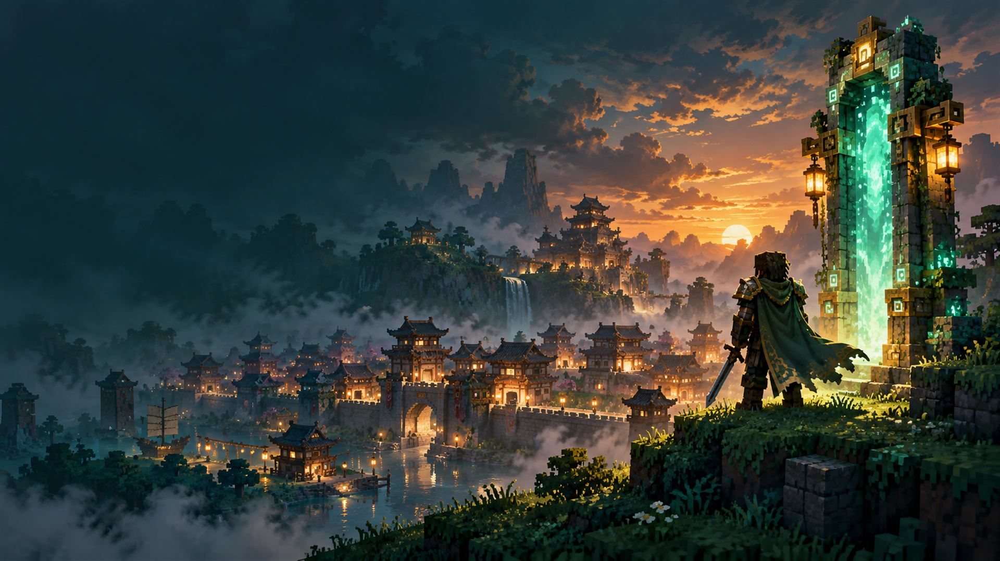

Get the launcher
Free, about 100 MB, and it keeps itself up to date.
Install in four steps
- DownloadPress the button above to get the installer.
- Run itIf Windows warns you, choose More info, then Run anyway.
- Log inPick a name and a password (8 characters or more). The first launch downloads the game and mods.
- Press PlayThat is it. Updates install themselves from now on.
Questions
Yes. The installer is not code-signed yet, so Windows SmartScreen shows a warning. Choose More info, then Run anyway. The installer is built from the public source on GitHub.
The launcher downloads the game, the mods and the server's resource packs the first time, so allow a few minutes. After that, only changes download.
You make one inside the launcher: pick a name and a password of at least 8 characters. It is checked securely when you join the server.
Play stays locked until the launcher is on the newest release, so everyone runs the same version. Updates install silently; just wait for it to finish.
Yes. The launcher has graphics presets, and the same setting is in the in-game Esc menu under Graphics.
The source is public on GitHub. The launcher is Windows only for now.